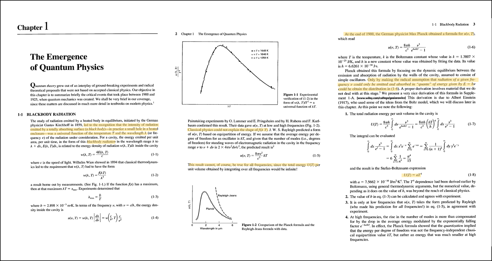
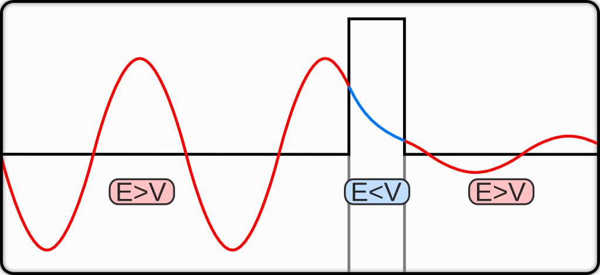

History of Quantum mechanic
很多人問奇異鳥說：什麼是量子力學? 他是怎麼被發現，又是怎麼被證明，以及被科學家接受的呢? 通常物理系教科書都以19世紀Plank所提出的量子概念來解釋黑體輻射(Black body radiation)當中
的紫外線災難(ultraviolet catastrophe) 當作揭開量子力學的序幕。普朗克以敏銳的數學直覺猜測了一套數學模式(光子量子化)，基於這樣的假設除了解決紫外災變外還導出當時18世紀熱學當中的
Stefan–Boltzmann law $(\dot{Q} = \sigma T^4 )$，這個當時被認為僅僅來自於實驗的經驗公式(Empirical relationship)。

可以另開視窗放大圖閱讀原文書內原文
這樣的跨時代的結果引起了科學家得注目，也說服並激發了愛因斯坦提出的光子說以解釋光電效應的實驗結果，無疑是量子力學的成功。到此為止19世紀的科學家對Quantum(quanta)的概念，從原本是波的
光開始有了photon”光子”一顆顆的概念，極為熟知的波粒二項性。後來科學家又發現，奇怪的除了光子外，竟然連原本只有粒子性的電子卻在雙狹縫當中卻擁有波的繞射行為[註解1]，使得科學家不經開始
構思，世界的物質是不是其實都可以用波的概念來一以概之?
Diffraction pattern of electron
因此1924年得布羅伊的物質波概念隨之提出，Clinton Davisson與Lester Germer的實驗[註解2]當中發現射入Ni crystal當中的電子散射的結果會與Bragg Law當中的結果相符，成功在1927年證明了
電子的波動性。
The development of quantum mechanic
在有了穩健的實驗結果以後科學家更能接受波粒二項性的結果，但是卻缺乏一個完整的數學架構來說明量子力學。此時1926年，由Heisenberg創造的矩陣力學以及Schrödinger提出的波動力學，將會把量子
力學推向下一個高峰！在薛丁格的波動力學當中的波函數(wave function)，描述了電子的特性，可以解釋且證明19世紀內科學家觀察到的各種奇怪現象：疊加態(super position 就是薛丁格的貓的來源)、
量子穿隧(Tunneling)、能階(atom level)、超精細結構(hyper fine strucutre)…等，當中最讓一般人感興趣的無非就是疊加態與量子穿隧效應了！本文將介紹”量子穿隧”當中常被教科書遺忘，卻十分直
觀卻具有應用價值的Topic，Alpha 衰變。
Superposition of cat's state
註解1,2 一般教科書說明電子的波動性是以雙狹縫繞射實驗說明，但其實以科學角度的發展史來說，那時候的科技還無法做到這樣的實驗。取而代之證實電子波動性的實驗應該是Clinton Davisson與Lester Germer
所做的Ni靶電子繞射(非bragg中所使用的X-ray繞射)
核子科學當中的核衰變其實的發展時間恰巧比量子力學早了幾年，1898年瑪麗·居禮(居禮夫人)在鈾礦當中提煉出釙(Polonium)以及鐳(Radium)，就發現了有核衰變放射出alpha粒子的現象。那時候研究核子科
學的科學家多半以化學家為主(當時沒有意識到量子力學的發展，以現在的知識來解釋核衰變就是量子力學的現象)，他們無法理解不同元素衰變的原理，但還是能從實驗數據當中得到半衰期的概念(類似化學反應當
中的一級反應)。
Alpha Decay chain
因此當時研究核子科學的化學家們整理出了大量的半衰期時間與核衰變放出alpha粒子能量的關係式子[註解3]。後來Hans Geiger(蓋格計數器的那位)與John Mitchell Nuttall在測量同位素核衰變的半衰期與alpha
粒子能量的實驗當中，經過數據處理做圖得到兩者間有線性的關係。
H. Geiger and J.M. Nuttall (1911)
而這個關係式就稱做Geiger–Nuttall law(1911年)，在當時也是一個經驗公式
\[log _{10} T_{1 / 2}=\frac{A(Z)}{\sqrt{E}}+B(Z)\]
當中T_(1/2)是半衰期，A(Z)與B(Z)是與衰變同位素的質子數有關的函數。
看似毫無交集的核子科學與量子力學都在19世紀並存，卻因為這個實驗交會，一邊提供了實驗數據，一邊提供了理論證明，更說服了科學家們量子力學的正確性。
[註解3]當時其實不是直接想去量alpha粒子的能量，原本是在測量核衰變的alpha粒子在空氣中能穿透多遠的距離(我猜測是想用核衰變的alpha粒子來做繞射相關的實驗，因此要抓距離)，然後就剛好
做了alpha粒子的能量量測。
鋪梗鋪了那麼久，故事講那麼長，現在終於要來解釋核衰變的現象了。核衰變在當時的科學家的研究當中是個隨機行為，這正是量子力學的特性之一，然而要定量的了解他，要從量子穿隧的概念解釋。因此我們
先簡短的回顧一下量子穿隧是什麼?
Review of Quantum Tunneling
在古典力學當中我知道在保守力作用下的系統會符合力學能守恆，因此滾動中的球會在斜坡凹谷中來回的轉換位能和動能，卻無法橫跨過超過系統總能量的位能障。因此滾動的球所允許出現的地方，就被限制在這個
斜坡或是此位能井當中，而不可能跨過能障而出現在能障的外部。

然而隨著系統的微縮， 古典力學不在完美，取而代之的是量子力學，而根據量子力學我們知道物質是以波函數的方式存在，粒子出現的機率即為波函數的振幅
\[\rho(x, t)=|\psi(x, t)|^2=\psi^*(x, t) \psi(x, t)\]
而波函數的架構則依循著薛丁格方程式可以做計算
\[i \hbar \frac{\partial}{\partial t} \Psi(x, t)=\left[-\frac{\hbar^2}{2 m} \frac{\partial^2}{\partial x^2}+V(x, t)\right] \Psi(x, t)\]
經過計算我們可以發現波函數在遇到一個比粒子能量高的能障，波函數並不會完全的反彈，而是有一小部分的波會穿透能障，而這穿透小小震幅的波函數則代表粒子是有機率性的能出現在能障外。
因此量子穿隧的概念就如下圖，從古典力學的角度左邊的球若是要滾動過山坡(能障)，球體的動能必須要overcome這樣的位能，然而從量子力學的角度來說，球體就算沒有足夠的動能仍然有機會能穿透山丘。
https://ysjournal.com/physics/quantum-tunneling/
Explanation of Alpha Decay
那要用穿隧效應來解釋核衰變的模型就可以想像成這樣：alpha粒子因強作用力(strong nuclear force)被束縛在原子核內，而在超過強作用力的範圍後原子外圍的位能則為庫倫位能。在原子核內的alpha粒子被困
在強作用力與庫倫作用力的位能井當中，以古典的角度來說是無法逃離位能井的，然而從量子穿隧的角度，縱使能量不足以穿過，來回碰撞位能井壁的alpha粒子仍有機會穿透能障釋放出來，即為所謂的alpha衰變。
http://hyperphysics.phy-astr.gsu.edu/hbase/Nuclear/alptun.html#c1
因此有了這樣的理解後我們可以知道半衰期的計算來自
\begin{gathered}
R=\frac{d N}{d t}=-\kappa N \\
N(t)=N_0 e^{-\kappa t} \\
\int_{N=N}^{N=N_0 / 2} \frac{1}{N} d N=-\kappa \int_{t=0}^{t=T_{1 / 2}} d t \\
T_{1 / 2}=\frac{\ln 2}{\kappa}=\frac{0.693}{\kappa}
\end{gathered}
為了求kappa我們必須計算單位時間從位能井穿隧出來的alpha particle數量，即為decay rate $(R)$。衰變alpha粒子的數量與剩餘樣品的數量N有關、以及alpha粒子在位能井來回碰撞的頻率$(f)$有關、最後乘上成功穿
隧的機率$(T)$
\[R=N\times f\times T\]
其中來回碰撞的頻率與粒子的速度及位能井的寬度有關，因此可以用粒子速度(能量)及位能井寬度$(r)$取代，至於穿透的成功率即為穿隧的機率(tunneling rate)，必須由WKB近似計算出。
\[R=N \times \frac{v}{2 r} \times T=N \times \frac{1}{2 r} \times \sqrt{\frac{2 E}{m}} \times T\]
Tunneling rate, WKB aproximation
\[T=e^{-2 \int_a^b \sqrt{\frac{2 m}{\hbar^2}(V(x)-E)} d x}\]
因此我們導出基於量子穿隧效應給出的核衰變反應速率，接著上式與一級反應的方程式連結再一起後可以得到下式，這是一個連結圍觀假設與巨觀測量的關係式子
\[N \times \frac{1}{2 r} \times \sqrt{\frac{2 E}{m}} \times T=-\kappa N=N \frac{0.693}{\tau_{1 / 2}}\]
在經過一點變換整理得到半衰期從量子力學估算出來的關係式
\[\tau_{1 / 2}=0.693 \times 2 r \times \sqrt{\frac{m}{2 E}} \times \frac{1}{T}\]
在上式當中，alpha粒子的質量已知、原子核半徑已知、釋放的粒子能量可以測量、剩下唯一要求的數值只有量子穿隧率需計算(需從量子力學計算)
Calcualtion of tunneling rate
現在可以開始計算從這個位能井的穿隧機率:
\[T=e^{-2 \int_a^b \sqrt{\frac{2 m}{\hbar^2}(V(x)-E)} d x} = e^{-2G}\]
那我們現在針對指數的部分 $G$ 做計算
\[G=\int_a^b \sqrt{\frac{2 m}{\hbar^2}(V(\mathrm{x})-E)} d x\]
同時我們有一條件式子，為alpha粒子穿透出去的能量，剛好恰為所需穿隧的庫倫位能邊界 $r=b$ 處
\[V(x=b)=\frac{Z_1 Z_2 e^2}{4 \pi \epsilon_0 b}=E \]
因此將此關係式帶回 $G$ 當中得到
\[G=\sqrt{\frac{2 m}{\hbar^2}} \sqrt{\frac{Z_1 Z_2 e^2}{4 \pi \epsilon_0}} \int_a^b \sqrt{\frac{1}{x}-\frac{1}{b}} d x \]
由於積分前面都式已知量，唯一要處理的只有積分的部分，因此接下來計算積分的地方
Calcualtion of Integral
Calcuate
\[ \int_a^b \sqrt{\frac{1}{x}-\frac{1}{b}} d x \]
Using subtution varibale method , set
\[ x=b \sin ^2 \theta \]
Therefore
\[d x=2 b \sin \theta \cos \theta d \theta \]
Subtuite
\[\int_a^b 2 b \sqrt{\frac{1}{b \sin ^2 \theta}-\frac{1}{b}} \sin \theta \cos \theta d \theta \]
\[\int_a^b 2 b \sqrt{\frac{1-\sin ^2 \theta}{b \sin ^2 \theta}} \sin \theta \cos \theta d \theta=\int_a^b 2 b \frac{\cos \theta}{\sqrt{b} \sin \theta} \sin \theta \cos \theta d \theta \]
\[=2 \sqrt{b} \int_a^b \cos ^2 \theta d \theta \]
\[=\left.2 \sqrt{b}\left(\frac{\theta}{2}+\frac{\sin 2 \theta}{4}\right)\right|_{x=b} ^{x=a} \]
Now we will replace $\theta $ as $x$
\[x=b \sin ^2 \theta \Rightarrow \theta=\sin ^{-1}(\sqrt{x / b}) \]
\[\sin 2 \theta=2 \sin \theta \cos \theta=2 \sqrt{\frac{x}{b}} \sqrt{1-\frac{x}{b}} \]
REplace those experssion into defnite integral we get
\[\int_a^b \sqrt{\frac{1}{x}-\frac{1}{b}} d x =\left.2 \sqrt{b}\left(\frac{1}{2} \sin ^{-1}(\sqrt{x / b})+\frac{1}{2}\left(\sqrt{\frac{x}{b}-\frac{x^2}{b^2}}\right)\right)\right|_{x=a} ^{x=b} \]
\[=\left.\sqrt{b}\left(\sin ^{-1}(\sqrt{x / b})+\sqrt{\frac{x}{b}-\frac{x^2}{b^2}}\right)\right|_{x=a} ^{x=b} \]
\[=\sqrt{b}\left(\sin ^{-1}(1)-\sin ^{-1}\left(\sqrt{\frac{a}{b}}\right)-\sqrt{\frac{a}{b}-\frac{a^2}{b^2}}\right) \]
Finaly using the relation we mention above
\[\frac{Z_1 Z_2 e^2}{4 \pi \epsilon_0 b}=E \Rightarrow b=\frac{Z_1 Z_2 e^2}{4 \pi \epsilon_0 E} \]
Plugin in to $G$
\[G=\sqrt{\frac{2 m}{\hbar^2}} \sqrt{\frac{Z_1 Z_2 e^2}{4 \pi \epsilon_0}} \sqrt{b}\left(\sin ^{-1}(1)-\sin ^{-1}\left(\sqrt{\frac{a}{b}}\right)-\sqrt{\frac{a}{b}-\frac{a^2}{b^2}}\right) \]
\[=\sqrt{\frac{2 m}{\hbar^2}} \sqrt{\frac{Z_1 Z_2 e^2}{4 \pi \epsilon_0}} \sqrt{\frac{Z_1 Z_2 e^2}{4 \pi \epsilon_0 E}}\left(\sin ^{-1}(1)-\sin ^{-1}\left(\sqrt{\frac{a}{b}}\right)-\sqrt{\frac{a}{b}-\frac{a^2}{b^2}}\right) \]
Now we set variable $\eta=a/b$
\[G=\frac{Z_1 Z_2 e^2}{4 \pi \epsilon_0 \hbar} \sqrt{\frac{2 m}{E}}\left(\frac{\pi}{2}-\sin ^{-1}(\sqrt{\eta})-\sqrt{\eta-\eta^2}\right) \]
我們終於得到Tunneling rate 當中指數項的 $G$ 的表示式了，是由粒子的基本常數以及原子核大小及alpha粒子能量的關係式，剩下
最後的工作就是把$G$帶回去求$\tau$
把上面積分得到的$G$帶回去可以得到$T$，再帶回最一開始推的半衰期的方程式中得到:
\[\tau_{1 / 2}=0.693 \times \frac{1}{2 a} \times \sqrt{\frac{2 E}{m}} \times \exp \left(-2 \frac{Z_1 Z_2 e^2}{4 \pi \epsilon_0 \hbar} \sqrt{\frac{2 m}{E}}\left(\frac{\pi}{2}-\sin ^{-1}(\sqrt{\eta})-\sqrt{\eta-\eta^2}\right)\right) \]
這邊很明顯就可以看到若是將兩邊都取對數$ln$就可以得到Geiger–Nuttall law當中的半衰期對數與能量-1/2次方的關係
\[log _{10} T_{1 / 2}=\frac{A(Z)}{\sqrt{E}}+B(Z)\]
因此透過量子力學的穿隧效應和前面的model，我們成功解釋了alpha decay的現象及科學家Geiger在實驗中所觀察到的Geiger–Nuttall law 經驗法則。
更讓人興奮的是，如果我們把這個equation當中所需的物理量帶入後，是否能成功算出半衰期呢? 因此以下我們試試看吧！
首先我們先估算exponentail內的數值$2G$
\[2 G=\frac{e^2}{4 \pi \epsilon_0 \hbar} \sqrt{\frac{2 m}{E}} Z_1 Z_2\left(\frac{\pi}{2}-\sin ^{-1}(\sqrt{\eta})-\sqrt{\eta-\eta^2}\right) \]
現在以元素瑪莉居禮發現的Po為例，原子核的大小為$a=9.1fm$，釋放的alpha粒子能量為$8.79MeV$ (此能量可以用$E=mc^2$估得，此處略過推導)
因此利用先前b與能量的關係式：
\[V(x=b)=\frac{Z_1 Z_2 e^2}{4 \pi \epsilon_0 b}=8.79meV \Rightarrow b=26.9fm \Rightarrow \eta =a/b=9.1/26.9=0.338\]
我們得到了穿透率所需的$\eta=0.338$ 最後帶回$2G$的方程式中 ($1/137$是原子的精細常數)
\[2 G=2 \frac{1}{137} \times 3 \times 10^8 \sqrt{\frac{2 \times 6.64 \times 10^{-27}}{8.79 \times 10^6 \times 1.6 \times 10^{-19}}} \times 2 \times 82\left(\frac{\pi}{2}-\sin ^{-1}(\sqrt{0.338})-\sqrt{0.338-0.338^2}\right) \]
\[=2 \frac{1}{137} \times 3 \times 10^8 \times 9.71 \times 10^{-8} \times 2 \times 82 \times 0.4773=33.28 \]
因此穿隧率$T$
\[T=e^{-2G}=e^{-33.28} \sim 3.493 \times 10^{-15} \]
最後我們把穿隧率帶回剛剛的半衰期公式當中
\[\tau_{1 / 2}=0.693 \times 2 r \times \sqrt{\frac{m}{2 E}} \times \frac{1}{T}\]
\[\tau_{1 / 2}=0.693 \times 2 \times 9.01 \times 10^{-15} \times \sqrt{\frac{2 \times 6.64 \times 10^{-27}}{8.78 \times 10^6 \times 1.6 \times 10^{-19}}} \times \frac{1}{3.493 \times 10^{-15}}\]
\[=3.47 \times 10^{-7}=0.347 \mathrm{~ms}\]
我們透過量子穿隧算出元素Po衰變成Pb的半衰期約為$0.347$ms，而實驗測量的數值約為$0.3$ms十分接近！[註解4]
註解4 此數據引用自 http://hyperphysics.phy-astr.gsu.edu/hbase/Nuclear/alpdet.html#c1